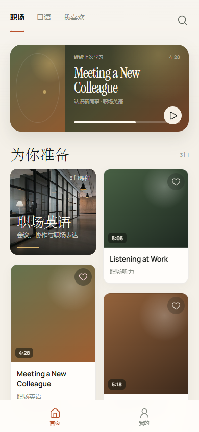
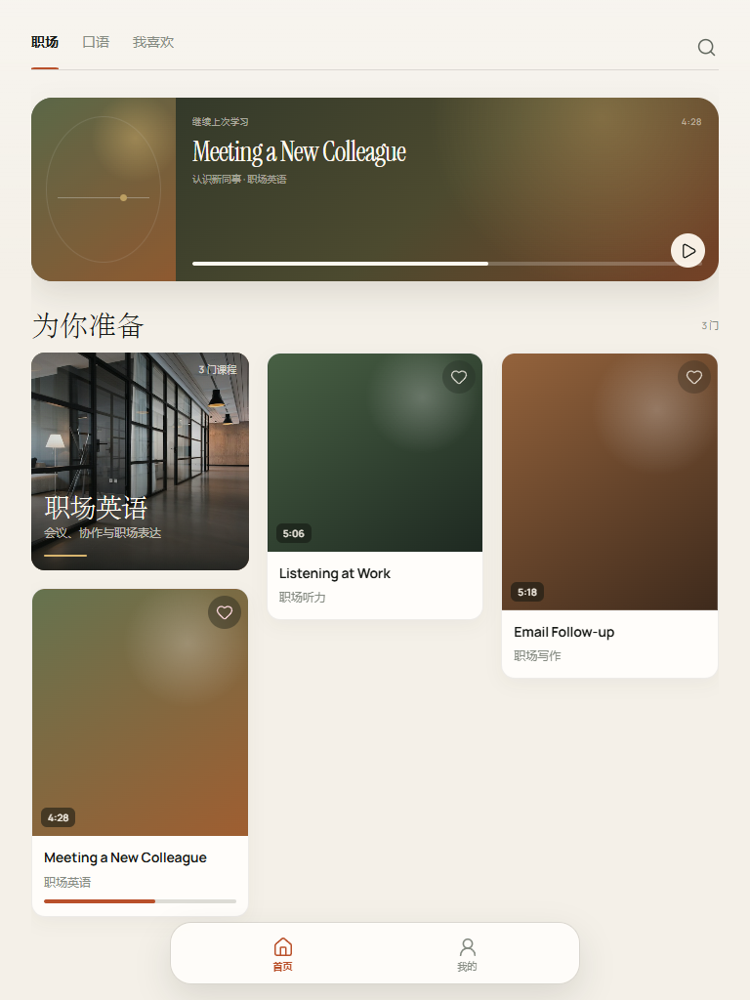
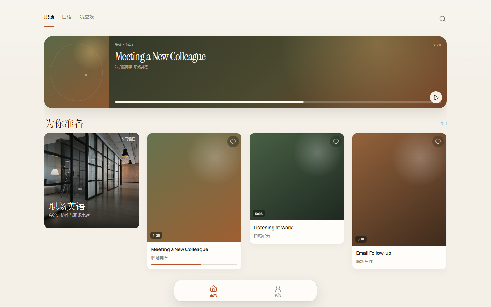
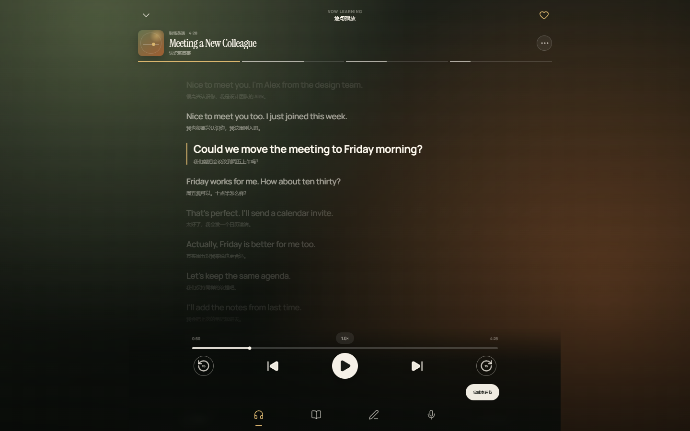
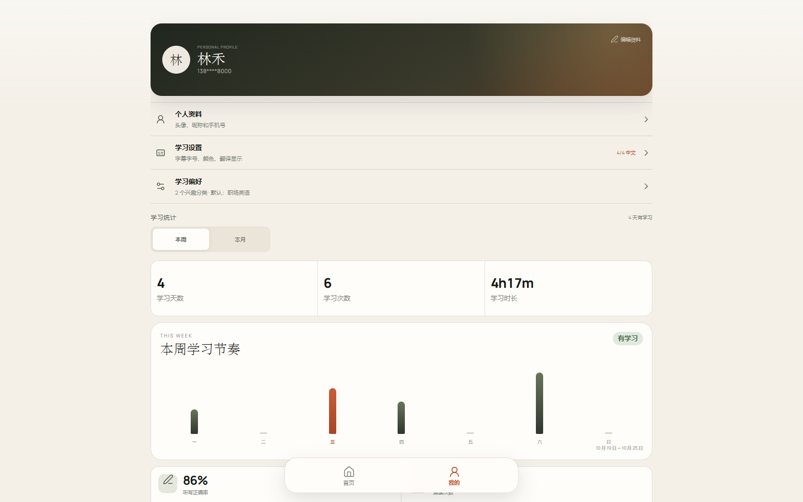

内容使用最大宽度、自然换行和受控列数，避免桌面端把手机布局无限拉宽。
手机
390 px
平板
768 px
电脑 · 首页
1440 px
电脑 · 播放器
Immersive
电脑 · 我的
Learning space
Sayline / Responsive system
移动端保持单手与沉浸体验，平板拓展到三列课程流，桌面使用四列内容和受控的阅读宽度，避免简单拉伸。





内容使用最大宽度、自然换行和受控列数，避免桌面端把手机布局无限拉宽。
手机占满宽度；平板和电脑变成底部居中的浮动导航，减少大面积空白。
桌面上字幕与设置内容限制在舒适阅读宽度，背景氛围继续铺满视口。